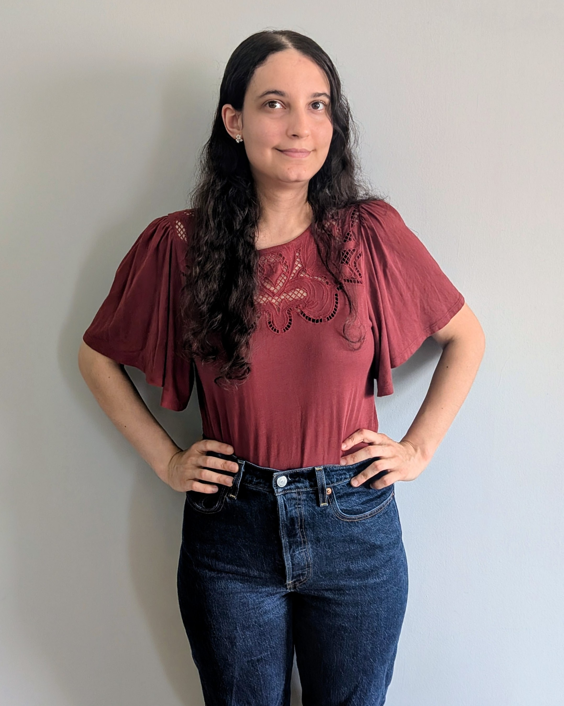

I'm a French voice actor, most at home bringing characters to life. My vocal range sits comfortably between 25 and 35, and I work fluently in both French and English.
While I love the craft of commercial and corporate narration, my heart is in character work — the kind that shows up in video games, animation, and audiobooks.
Some of that instinct comes from an unusual place: years spent as a Game Master for tabletop RPGs like Dungeons & Dragons and Daggerheart. Voicing a full table of characters live, on the fly, night after night, taught me to build characters fast, commit to choices, and stay warm and present with an audience — skills I bring directly into the booth.
I trained with The Showreel in London, completing their VO Journey program and their Character Workshop, and I'm always looking for the next story — or character — to bring to life.
Get in Touch